Visualization Deception

Introduction to ggplot: Visualization in the Humanities
Edward Tufte suggests that graphical excellence is defined by “that which gives the viewer the greatest number of ideas, in the shortest time, with the least ink, the smallest space, and which tells the truth about data.”
Edward Tufte, The Visual Display of Quantitative Information (Graphics Press, 1983).
truth
dataEdward Tufte suggests that graphical excellence is defined by “that which gives the viewer the greatest number of ideas, in the shortest time, with the least ink, the smallest space, and which tells the truth about data.”
Edward Tufte, The Visual Display of Quantitative Information (Graphics Press, 1983).
Edward Tufte suggests that graphical excellence is defined by “that which gives the viewer the greatest number of ideas, in the shortest time, with the least ink, the smallest space, and which tells the truth about data.”
Edward Tufte, The Visual Display of Quantitative Information (Graphics Press, 1983).
# First, download from CRAN:
install.packages("devtools")
install.packages('ggplot2')
# Then, from Github:
devtools::install_github("lmullen/historydata")library(historydata)
data(us_state_populations)
# Let's look at the first five rows
us_state_populations## Source: local data frame [983 x 4]
##
## GISJOIN year state population
## (chr) (int) (chr) (int)
## 1 G090 1790 Connecticut 237655
## 2 G100 1790 Delaware 59096
## 3 G130 1790 Georgia 82548
## 4 G240 1790 Maryland 319728
## 5 G250 1790 Massachusetts 475199
## 6 G330 1790 New Hampshire 141899
## 7 G340 1790 New Jersey 184139
## 8 G360 1790 New York 340241
## 9 G370 1790 North Carolina 395005
## 10 G420 1790 Pennsylvania 433611
## .. ... ... ... ...A ridiculous example.
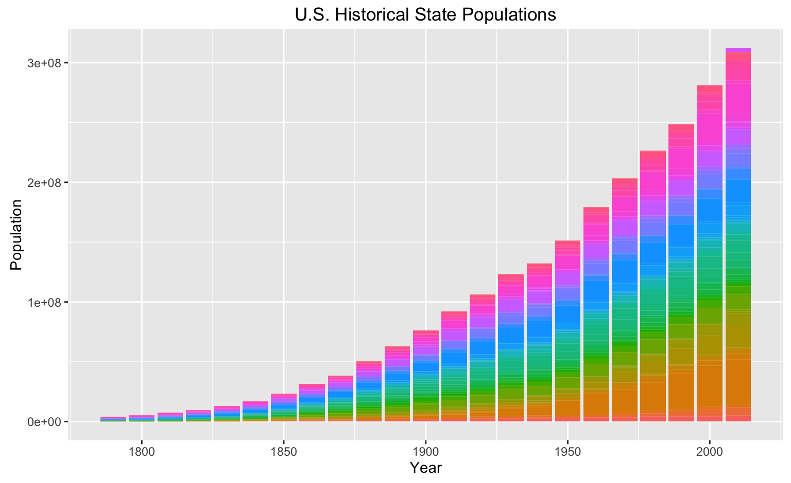
A visualization concept created by Leland Wilkinson (1999) to define the elements of statistical graphics:
. . . describes the meaning of what we do when we construct statistical graphics . . . More than a taxonomy . . . Computational system based on the underlying mathematics of representing statistical functions of data.
Adapted by the creator of ggplot, Hadley Wickham, in 2009. ggplot offers a:
See Hadley Wickham, “A Layered Grammar of Graphics,” Journal of Computational and Graphical Statistics vol. 19 no. 1 (2010): 3–28 http://vita.had.co.nz/papers/layered-grammar.pdf.
Let’s break down what we did with the ggplot code. The code for our previous bar chart looked like:
ggplot(data = us_state_populations, aes(x = year, y = population)) +
geom_bar(aes(fill = state), stat="identity") +
ggtitle("U.S. Historical State Populations") +
theme(legend.position="none") +
labs(x = "Year", y = "Population")Let’s break down what we did with the ggplot code. The code for our previous bar chart looked like:
ggplot(data = us_state_populations, aes(x = year, y = population)) +
geom_bar(aes(fill = state), stat="identity")Let’s break down what we did with the ggplot code. The code for our previous bar chart looked like:
ggplot(data = us_state_populations, aes(x = year, y = population)) +
geom_bar(aes(fill = state), stat="identity")ggplot needs:
data: data as an R data frame
coordinate system: describe 2D space data is projected onto, such as Cartesian coordinates, polar coordinates, and map projections.
geoms: describe the geometric objects that represent data, such as points, lines, and polygons.
aesthetics: describe visual characteristics that represent data, such as position, size, color, and shape. scales: for each aesthetic, describe how visual characteristic is converted to display values, such as log scales, color scales, size scales, and shape scales.
stats: describe statistical transformations such as counts, means, medians, or regression lines.
facets: describe how data is split into small multiples.
Let’s break down what we did with the ggplot code. The code for our previous bar chart looked like:
ggplot(data = us_state_populations, aes(x = year, y = population)) +
geom_bar(aes(fill = state), stat="identity")data = us_state_populationsaes(x = year, y = population)Let’s break down what we did with the ggplot code. The code for our previous bar chart looked like:
ggplot(data = us_state_populations, aes(x = year, y = population)) +
geom_bar(aes(fill = state), stat="identity")geom_bar(aes(fill = state), stat="identity") See the geom_bar documentation for the differences in the stat flag. By default, geom_bar uses stat='count' which sets the height of the bar proportion to the number of cases in each group. Since we want the height of the bars to represent values in the data, we use stat='identity' to map a variable to the y aesthetic.
| Name | Description |
|---|---|
| bin | Divide continuous range into bins, and count number of points in each |
| boxplot | Compute statistics necessary for boxplot |
| contour | Calculate contour lines |
| density | Compute 1d density estimate |
| identity | Identity transformation, f (x) = x |
| jitter | Jitter values by adding small random value |
| Calculate values for quantile-quantile plot | |
| quantile | Quantile regression |
| smooth | Smoothed conditional mean of y given x |
| summary | Aggregate values of y for given x |
| unique | Remove duplicated observations |
ggplot makes the production of these graphics simple. Note that we were able to create a barchart with two lines of code. If I wanted to reproduce that example in JavaScript using the D3.js library, it would be something like this:
var margin = {top: 20, right: 20, bottom: 30, left: 40},
width = 960 - margin.left - margin.right,
height = 500 - margin.top - margin.bottom;
var x = d3.scale.ordinal()
.rangeRoundBands([0, width], .1);
var y = d3.scale.linear()
.range([height, 0]);
var xAxis = d3.svg.axis()
.scale(x)
.orient("bottom");
var yAxis = d3.svg.axis()
.scale(y)
.orient("left")
.ticks(10, "%");
var svg = d3.select("body").append("svg")
.attr("width", width + margin.left + margin.right)
.attr("height", height + margin.top + margin.bottom)
.append("g")
.attr("transform", "translate(" + margin.left + "," + margin.top + ")");
d3.tsv("data.tsv", type, function(error, data) {
if (error) throw error;
x.domain(data.map(function(d) { return d.letter; }));
y.domain([0, d3.max(data, function(d) { return d.frequency; })]);
svg.append("g")
.attr("class", "x axis")
.attr("transform", "translate(0," + height + ")")
.call(xAxis);
svg.append("g")
.attr("class", "y axis")
.call(yAxis)
.append("text")
.attr("transform", "rotate(-90)")
.attr("y", 6)
.attr("dy", ".71em")
.style("text-anchor", "end")
.text("Frequency");
svg.selectAll(".bar")
.data(data)
.enter().append("rect")
.attr("class", "bar")
.attr("x", function(d) { return x(d.letter); })
.attr("width", x.rangeBand())
.attr("y", function(d) { return y(d.frequency); })
.attr("height", function(d) { return height - y(d.frequency); });
});
function type(d) {
d.frequency = +d.frequency;
return d;
}ggplot(data = us_state_populations, aes(x = year, y = population)) +
geom_point()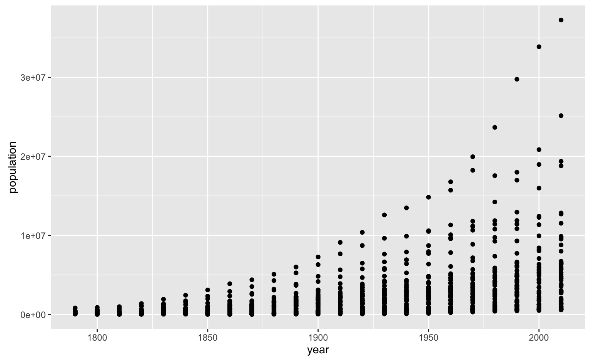
ggplot(data = us_state_populations,
aes(x = year, y = population,
size=population, alpha=population)) +
geom_point()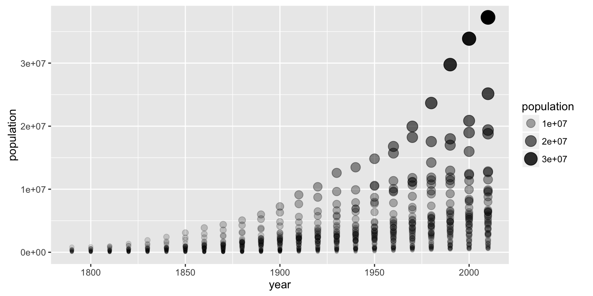
populations + geom_point() + geom_smooth(color="red")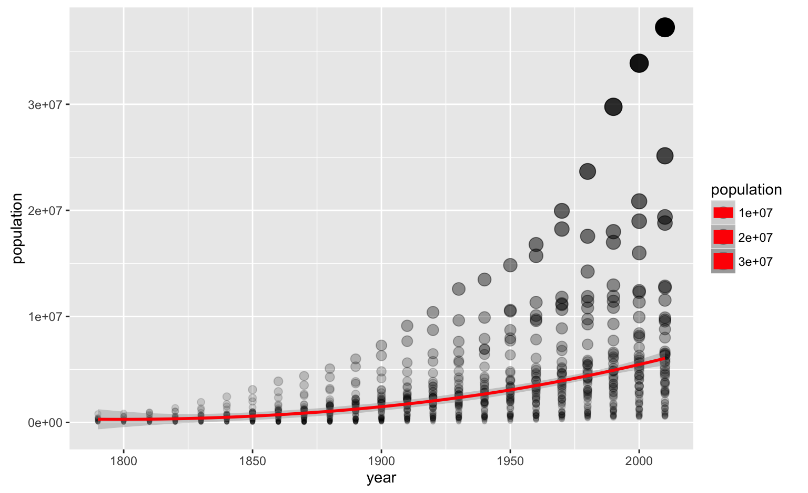
populations + geom_jitter(alpha = 0.4)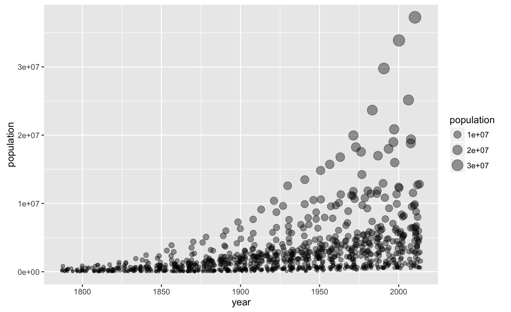
populations + geom_text(aes(label=state), size = 3)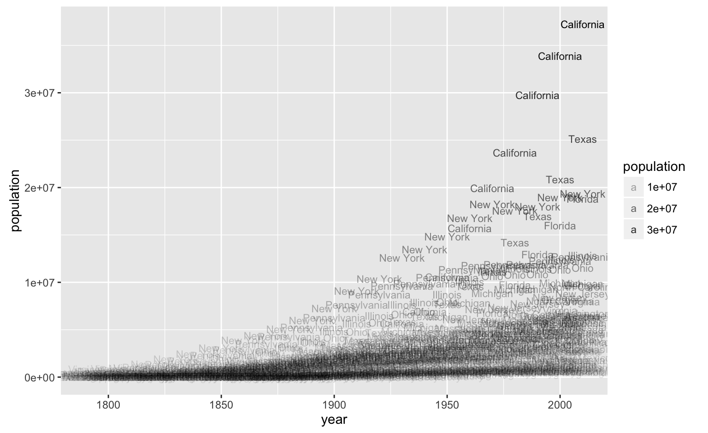
population_subset <- subset(us_state_populations,
state %in% c("New Mexico", "Arizona", "Utah", "Colorado"))
ggplot(population_subset, aes(x = year, y = population)) +
geom_bar(stat = "identity") +
facet_grid(state ~ .)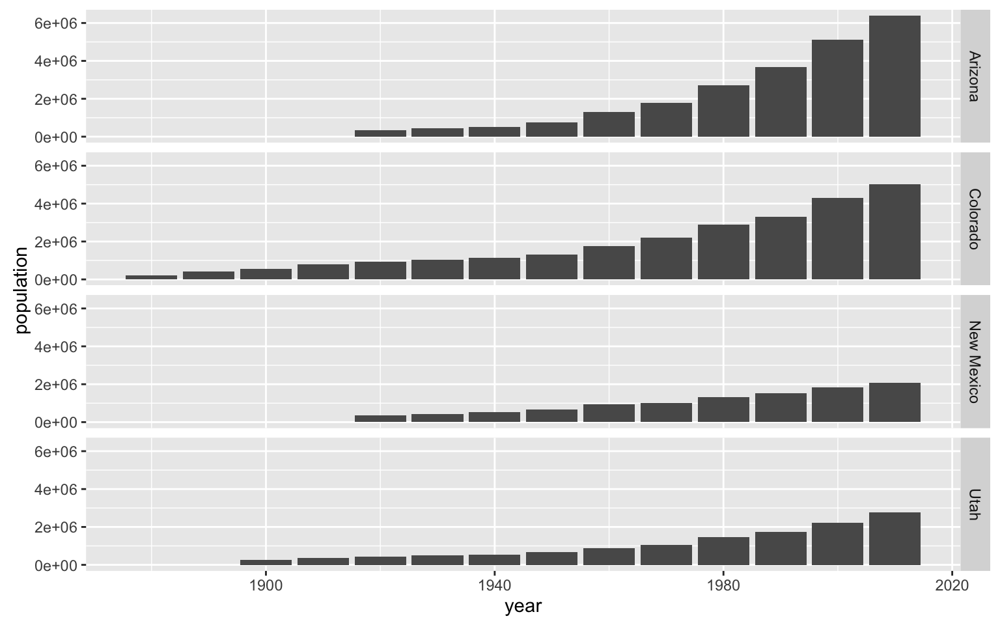
p <- ggplot(us_state_populations, aes(x = year, y = population))
p + geom_line(aes(color = state))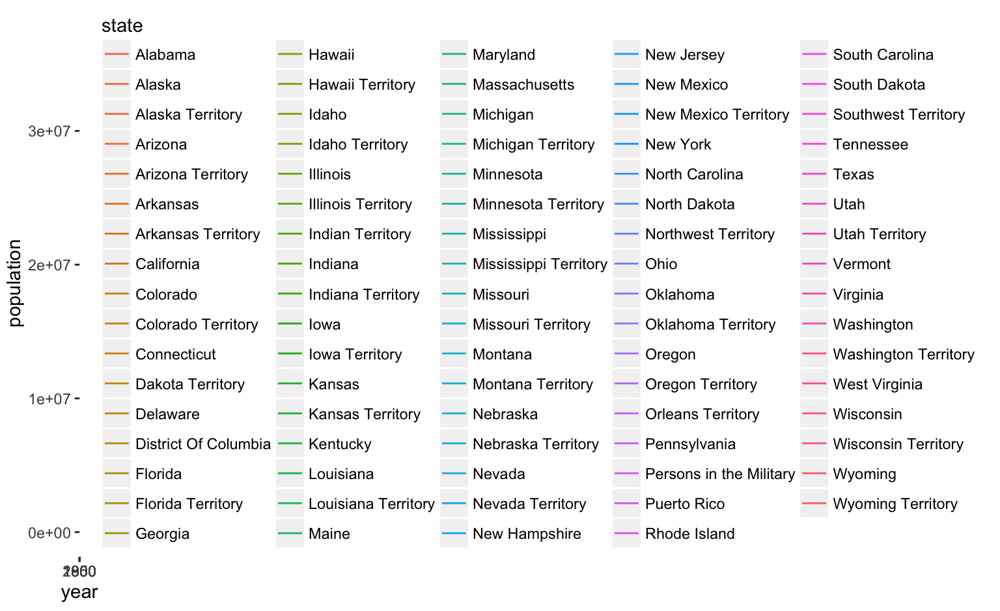
p + geom_line() +
facet_wrap(~state, ncol = 12) +
theme_linedraw()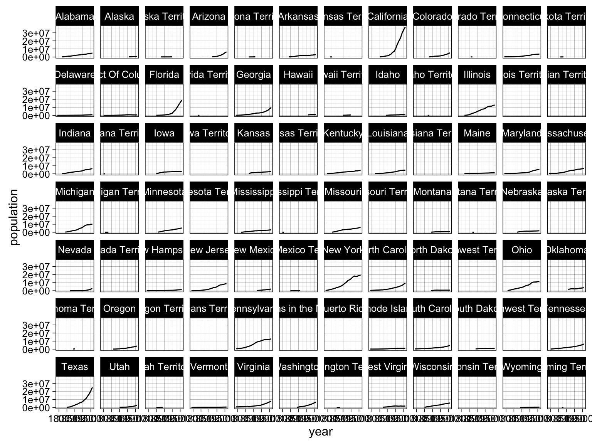
Controlling scales means we can control the mapping of data (domain) to aesthetics (range).
Scales depend on the variable type: discrete (factor, logical, or character) or continuous (numeric).
Scale specifications have the form of scale_<aesthetic>_<scalename>():
Let’s start with what we know and look at population growth in the western U.S.
western_subset <- subset(us_state_populations,
state %in% c("Arizona", "California", "Colorado", "Idaho",
"Montana", "Nevada", "New Mexico", "Oregon",
"Utah", "Washington", "Wyoming"))
ggplot(data = western_subset, aes(x = year, y = population, fill=state)) +
geom_bar(stat="identity")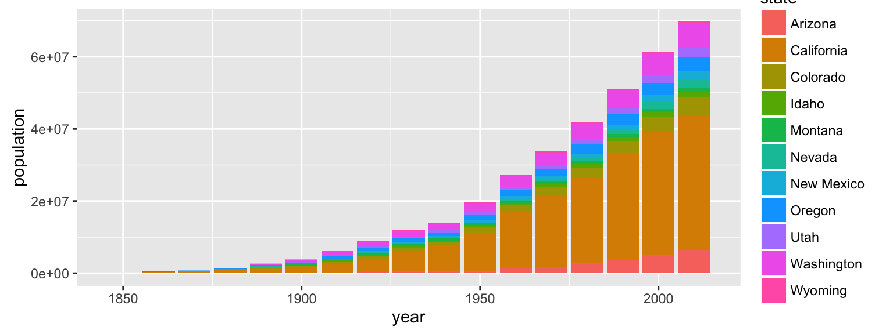
Setting a grey scale, for example:
ggplot(western_subset, aes(x = year, y = population, fill = state)) +
geom_bar(stat="identity") +
scale_fill_grey()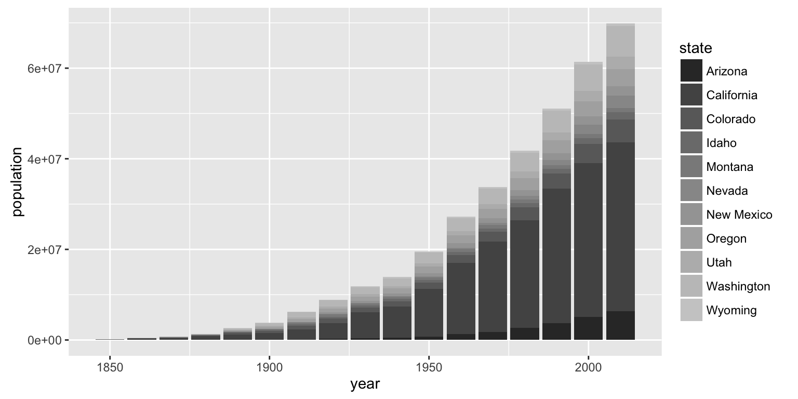
ggplot(western_subset, aes(x = year, y = population, fill = state)) +
geom_bar(stat="identity") +
scale_fill_discrete(name = "State", label = c("AZ", "CA", "CO", "ID",
"MT", "NV", "NM", "OR",
"UT", "WA", "WY")) 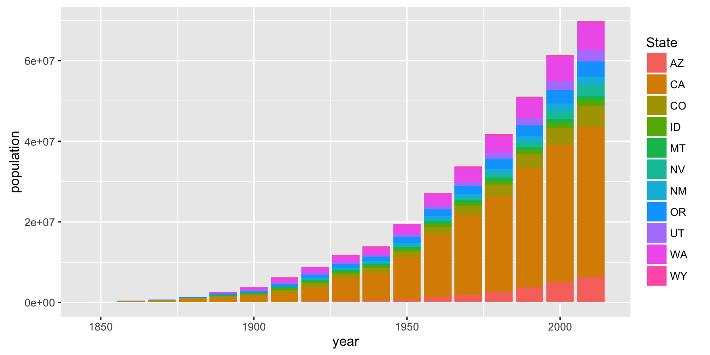
ggplot(western_subset, aes(x = year, y = population, fill = state)) +
geom_bar(position = "dodge", stat = "identity") +
scale_fill_brewer(palette = "Paired") +
theme_minimal()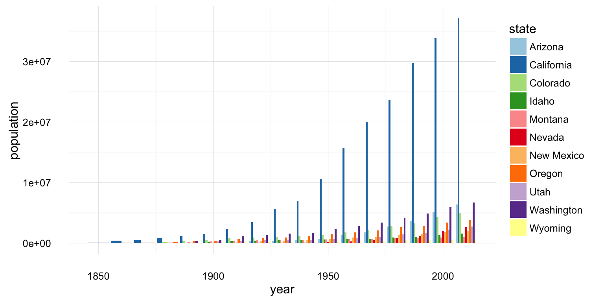
Let’s look at a new set of data.
data(paulist_missions)
paulist_missions %>% head(5)## Source: local data frame [5 x 17]
##
## mission_number church city state
## (int) (chr) (chr) (chr)
## 1 1 St. Joseph's Church New York NY
## 2 2 St. Michael's Church Loretto PA
## 3 3 St. Mary's Church Hollidaysburg PA
## 4 4 Church of St. John Evangelist Johnstown PA
## 5 5 St. Peter's Church New York NY
## Variables not shown: date_start (date), date_end (date), year (dbl),
## decade (chr), duration_days (int), duration_weeks (fctr), confessions
## (int), converts (int), order (chr), lat (dbl), long (dbl), volume (int),
## page (int)ggplot(paulist_missions, aes(x = confessions, y = converts)) +
geom_point(alpha = 0.5, shape = 1) +
labs(title = "Paulist Missions",
x = "Confessions",
y = "Converts") 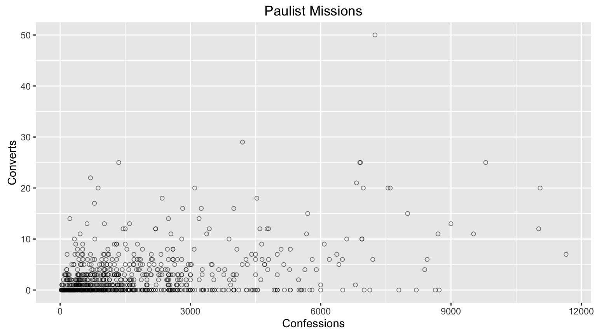
ggplot(paulist_missions, aes(x = confessions, y = converts)) +
geom_point(alpha = 0.5, shape = 1) +
labs(title = "Paulist Missions",
x = "Confessions",
y = "Converts") +
scale_y_reverse()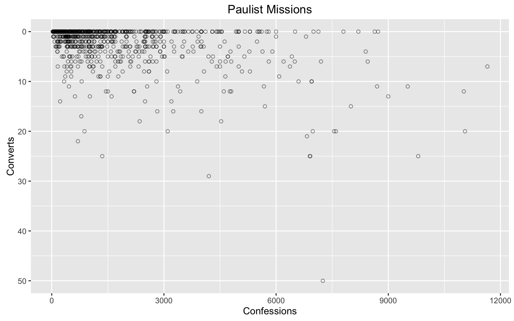
ggplot(paulist_missions,
aes(x = state, y = confessions, size = converts)) +
geom_jitter(position = position_jitter(w=.2, h=.1), shape = 21) +
scale_size_area(max_size = 10) +
theme(
axis.text.x = element_text(angle = 90, hjust = 1)
)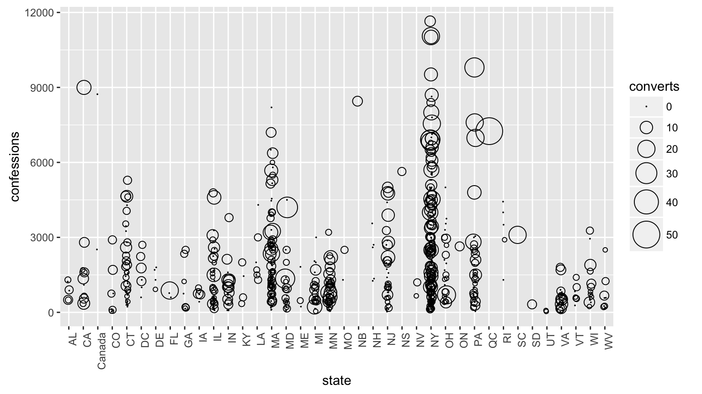